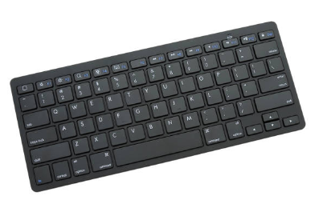

Teclado
Hello, World!
O teclado é um dispositivo de entrada. Permite que o usuário faça a entrada de caracteres e ative
botões e atalhos no computador.
Os teclados físicos são periféricos, ou seja, se localizam fora do gabinete e podem ser facilmente
movidos e acessados. Teclados virtuais costumam ser usados por dispositivos com tecnologia touch
para permitir a entrada de caracteres através do toque na tela.
Geralmente usam layout QWERTY, e alguns modelos mais modernos integram funções como iluminação RGB e
recursos multimídia.